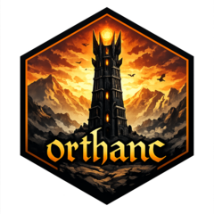

Retrieve and write patients to a path
Source:R/retrieve-dicom.R
retrieve_and_write_patients.RdRetrieve the DICOM file contents for a list of Patients and write them
to a path on disk. DICOM files are saved to disk in a directory structure
of Patient -> Study -> Series -> File. If mirai::daemons() has
been used to set persistent background processes, this function will write
patients to disk in parallel using all available processes.
Usage
retrieve_and_write_patients(
patients,
path,
stream = FALSE,
progress = rlang::is_interactive()
)Arguments
- patients
List of Patients.
- path
Path where you want to write the patients (files).
- stream
Should the resources be streamed and written to disk in chunks? Default is
FALSE, which means the resource file contents are retrieved in their entirety and written to disk all at once.- progress
Whether to show progress bars. By default, progress bars are enabled in interactive sessions (i.e., if
rlang::is_interactive()returnsTRUE).
Examples
if (FALSE) { # \dontrun{
client <- Orthanc$new("https://orthanc.uclouvain.be/demo")
patients <- find_patients(client, query = list(PatientName = "HN_P001"))
retrieve_and_write_patients(patients, tempdir())
} # }